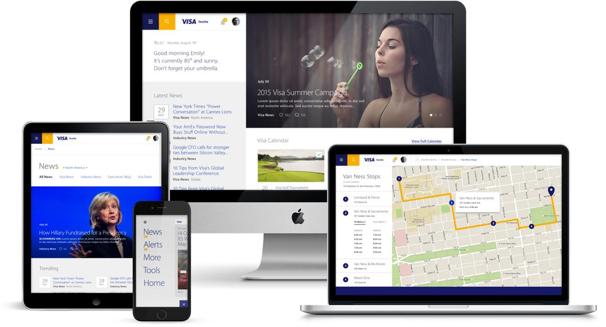
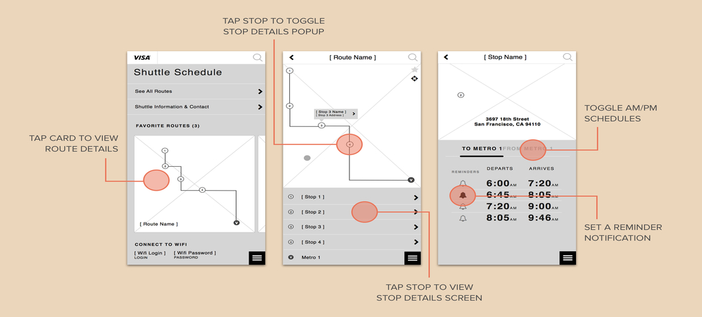
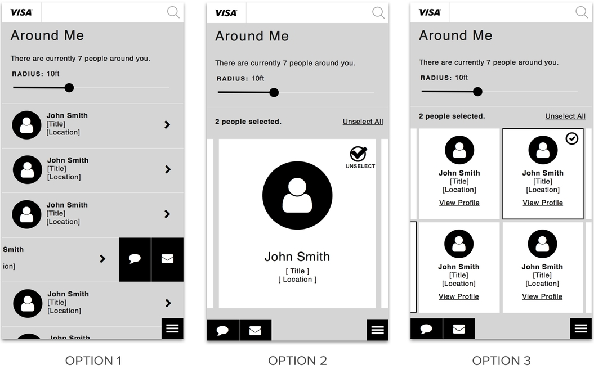
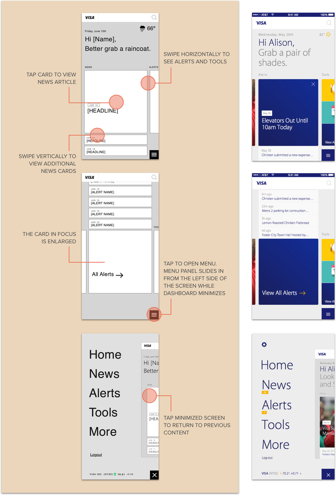
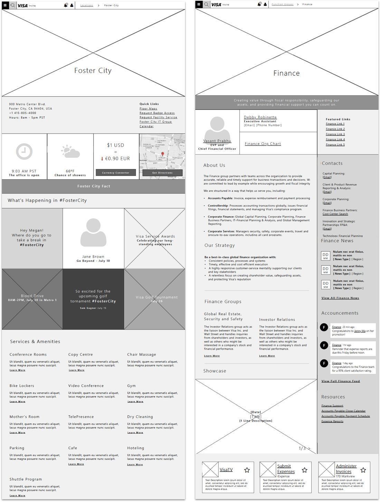
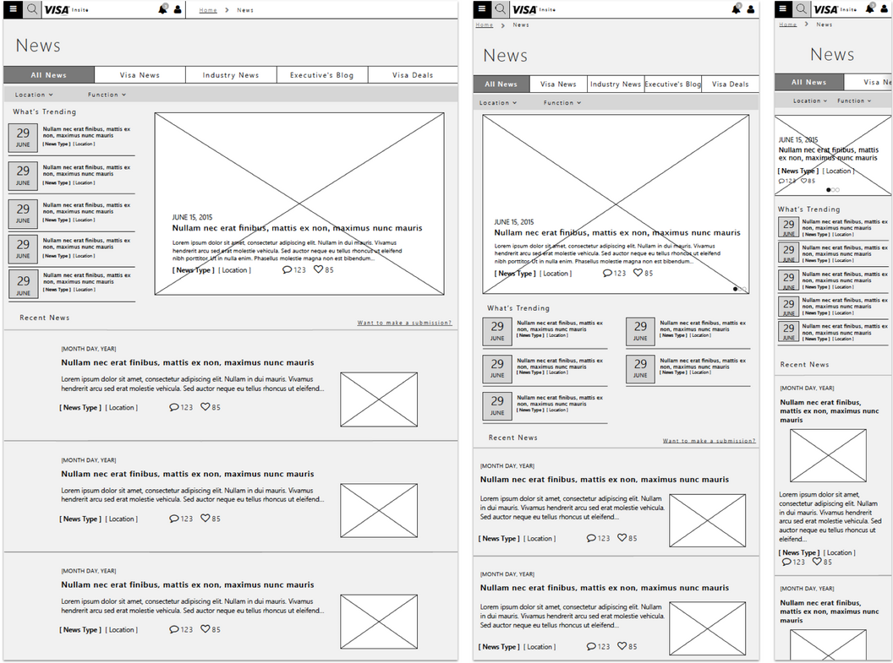
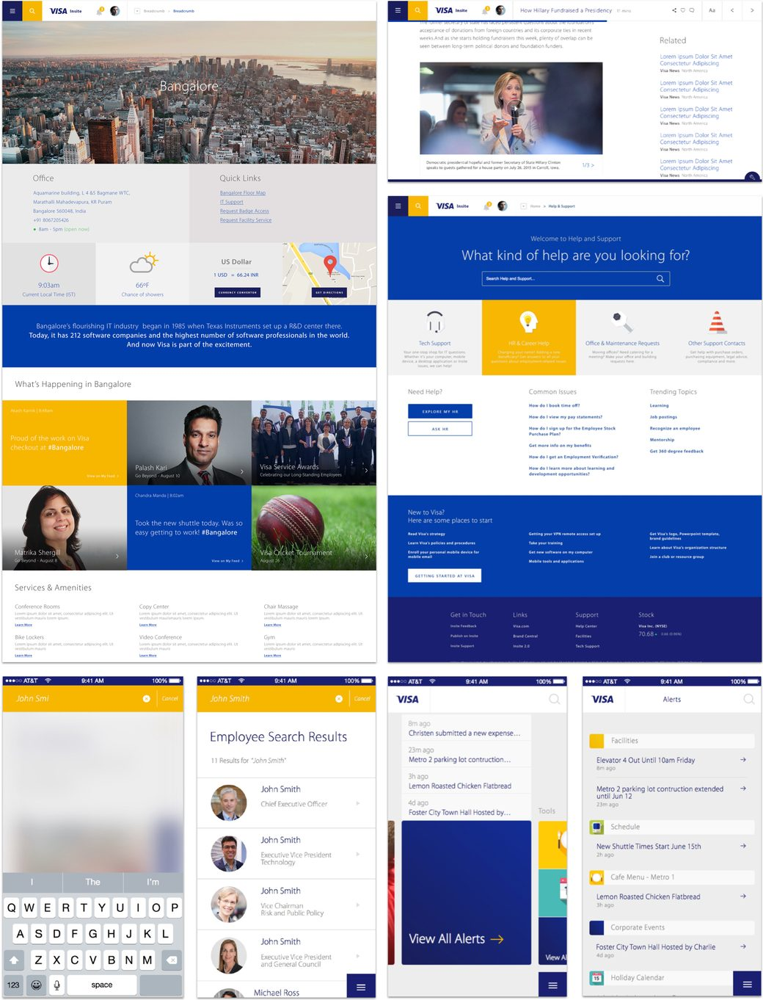

Visa Global Employee Intranet
Transforming the daily digital experience for 20,000 employees worldwide

Key Outcomes
- Transformed the daily work experience for 20,000 Visa employees worldwide — addressing the frustration nearly half the global workforce reported was making them less effective
- Made the strategic call to expand scope from a mobile companion app to a full responsive intranet redesign — after research revealed the app alone would not solve the underlying problem
- Consistently pushed back on stakeholder-driven feature requests in favor of employee needs — maintaining an employee-first position through every decision despite competing organizational priorities
- Recognized with #1 in the Intranet Design Awards (Design category) with honorable mentions in Intranet Usability
THE BUSINESS STAKES
Employee Experience as Talent Strategy
In the Silicon Valley talent market, employee experience is a retention lever — and Visa's intranet was working against them. Research showed nearly half of 20,000 global employees felt frustrated or less effective because of it. For a company competing with Google, Apple, and Meta for top talent, that's not a UX problem. It's a business risk.
The brief was a mobile companion app. What it became was a complete reimagining of Visa's digital workplace, because research made clear that a companion to a broken experience would still be a broken experience.
KEY DECISIONS
The Decision to Expand Scope
Early research changed the shape of the engagement. What employees described wasn't a need for better mobile access — it was frustration with the intranet itself. Fragmented information, poor search, no sense of community or culture. A companion app would have delivered a faster path to the same dead ends.
I made the case to expand scope to a full intranet redesign. That meant more time, more budget, and a harder conversation with the client about what the real problem was. The argument was simple: if we solve the wrong problem well, we're still solving the wrong problem.
Pushing Back on Stakeholders
Visa stakeholders had priorities that didn't always align with what employees needed. Internal communications teams wanted prominent news placement. Business units wanted their portals elevated. All legitimate organizational interests — and most of them conflicted with the research.
The clearest example: the internal communications team advocated strongly for a news carousel above the fold — the kind of corporate marquee that signals authority to leadership and goes unread by everyone else. Research told a different story. Employees were using the intranet primarily for task completion: shuttle schedules, HR forms, cafe menus, IT requests. The news was something they were looking past, not toward. We moved news to a secondary position and elevated the tools employees actually used. The research resolved what the organizational debate couldn't.
That discipline — choosing employee needs over stakeholder preferences, with data behind every decision — is what produced a result worth an industry award.
The Problem
Nearly half of Visa's 20,000 employees reported feeling frustrated or ineffective on the job. The existing intranet was a contributing factor.
STRATEGY & APPROACH
Employee First, Mobile First
Our mobile-first approach forced us to prioritize ruthlessly, creating a hyper-contextual, personalized experience and cutting unnecessary content to focus on what employees actually needed.
Through extensive user research, we identified the key tasks employees relied on their intranet for and translated these into purpose-built mobile tools: shuttle schedule, cafe menu, holiday calendar, employee search, and a system for discovering and interacting with nearby colleagues.

App Wireframes — Key Flows

KEY DECISIONS & TRADEOFFS
Creative Solutioning
Visa challenged us not just to create something useful, but to delight employees enough to compete with other Silicon Valley employers. We pushed ourselves to challenge typical patterns and explore unconventional interactions while maintaining an extremely intuitive experience.

Responsive Web Experience
The responsive intranet redesign ran on a parallel track with the app. We carried our learnings forward, making deliberate decisions about how experiences would scale from native mobile to large-screen contexts.
We spoke continually with employees to understand priorities, using findings to shape content hierarchy and feature prioritization. At every turn, we pushed the client to test early, test often, and make decisions based on employee needs rather than stakeholder assumptions.

Wireframes — Location, Employee Groups & News

Recognition
First place in the Intranet Design Awards (Design category), with honorable mentions in Intranet Usability. A digital home that reduced daily friction for 20,000 employees.
RESULTS
Impact & Outcomes
The redesigned Visa intranet gave 20,000 employees a digital workplace that finally reflected how they actually worked — unified tools, news, connections, and alerts in one coherent experience.
Adoption was immediate. Within the first weeks of launch, the majority of Visa's global employee population had migrated to the new experience, and the qualitative signal from internal channels shifted from "I avoid the intranet" to "I use it to start my day." The most telling indicator wasn't a number we tracked — it was that the legacy intranet's traffic fell off a cliff. People moved to the new system because it was finally faster to use it than to work around it.
The work was recognized with first place in the Intranet Design Awards (Design category) with honorable mentions in Intranet Usability — validation that the employee-first approach produced the right result.

RETROSPECTIVE
What I'd Do Differently
The scope expansion from a mobile companion app to a full responsive intranet was the right call — the research was clear that the original framing wouldn't have solved the underlying problem — but I'd run the stakeholder alignment for that pivot earlier. I waited until I had a fully formed case before bringing senior leadership in, and that's the kind of thing I now do the opposite of: bring leaders into the messy middle so they own the reframing alongside me, rather than receiving a finished case to ratify. I'd also build the post-launch measurement plan into the kickoff. We had directional signal, but I should have negotiated for hard metrics on day one, before launch pressure made everyone want to look forward instead of back.